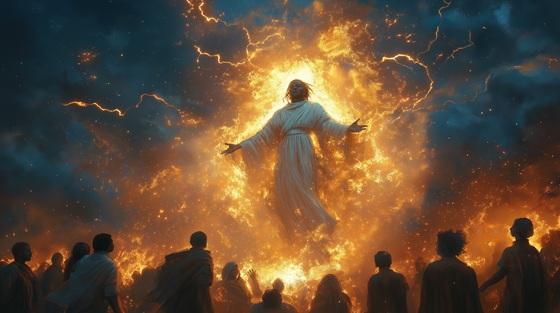

The story of Shango does not end in flame — it continues in every drumbeat, every storm, every moment truth meets the fire of divinity.
Thunder Ascended marks his final transformation — the moment he becomes eternal Orisha, not only in West Africa, but across the world. His worship spans centuries and continents. He is called in justice, invoked in dance, and praised in flame.
This track is about his legacy. The knowledge that Shango is not a god of the past — he is ever-present, pulsing in the sky and soul alike. When thunder roars… his name is still being sung.
Thunder Ascended
The fire is out, the war is done,
But still he walks where lightning runs.
No tomb was carved, no ashes found—
Just echoes in the storm’s deep sound.
His name survives where silence grows—
In thunder’s breath, the faithful know.
Thunder ascended, fire made whole,
He reigns beyond the flesh and soul.
No wind can carry, no time erase—
The storm remembers every face.
The drums still speak in temple light,
They call his name in sacred rite.
He comes in fire, leaves in mist—
And blesses lips the sky has kissed.
He is the breath before the rain—
The oath fulfilled in storm and flame.
Thunder ascended, fire made whole,
He reigns beyond the flesh and soul.
No wind can carry, no time erase—
The storm remembers every face.
They dance with feet that kiss the ground,
And hear his name in every sound.
Not just in wrath, but joy and flame—
The people rise and speak his name.
He is not gone. He is the drum—
That calls the world to rise, to come.
Thunder ascended, fire made whole,
He reigns beyond the flesh and soul.
No wind can carry, no time erase—
The storm remembers every face.
Orisha eternal, spirit crowned,
In every strike your voice resounds.
Your throne is sky, your realm is sound—
And in our hearts, you are unbound.
The storm has passed…
…but not the god it carried.